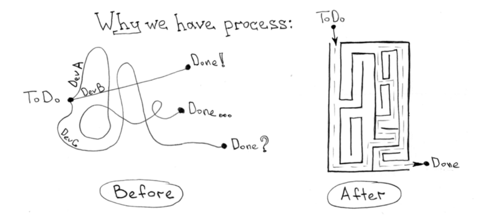
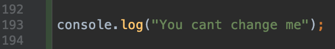

CI/CD

Continuous Integration
CI is all about integrating code and making sure it works.
Continuous Delivery
Continuous delivery is an extension of continuous integration.
Continuous Deployment
Continuous deployment goes one step further than continuous delivery.So what's the difference?

Advantages and costs of implementing CI/CD
CI/CD is an investment!How to prepare project for CI/CD?
Following good practises is a good start... Use logger middleware for yours apps
Use linters
A linter will help avoid errors, and things that could not be errors (but look like them) or could be potentially dangerous.
Write at least basic unit tests
These are the foundations of a well-designed CI.Dependencies should have fixed versions, use `~` instead of `^`
And don't forget to always commit at least one of yarn.lock or package-lock.json depending on which package manager you're using.Use dockerfile

Create a foundations for integration tests
- Prepare docker-compose.yml file
- Make use of ORM's libraries like 'sequelize'
Jenkinsfile
Uses groovy syntax
def hashPath(packVer, length = 16) {
hash = sh(
script: "date | shasum -a 256 | awk \'{print substr(\$0,0,${length})}\'",
returnStdout: true
).trim()
ver = sh(
script: "echo ${packVer} | tr -d '.'",
returnStdout: true
).trim()
return "${ver}${hash}"
}
Let you integrate with 3rd party software
post {
success {
slackSend(
channel: "$slackChannel",
color: 'good',
message: "App successfully deployed - *(${env.BUILD_NUMBER}) ${env.JOB_NAME}* (<${env.BUILD_URL}|Open>)"
)
}
}
Easy integration with docker
agent {
docker {
image 'node:10.15'
args '-u root:root'
reuseNode true
}
}